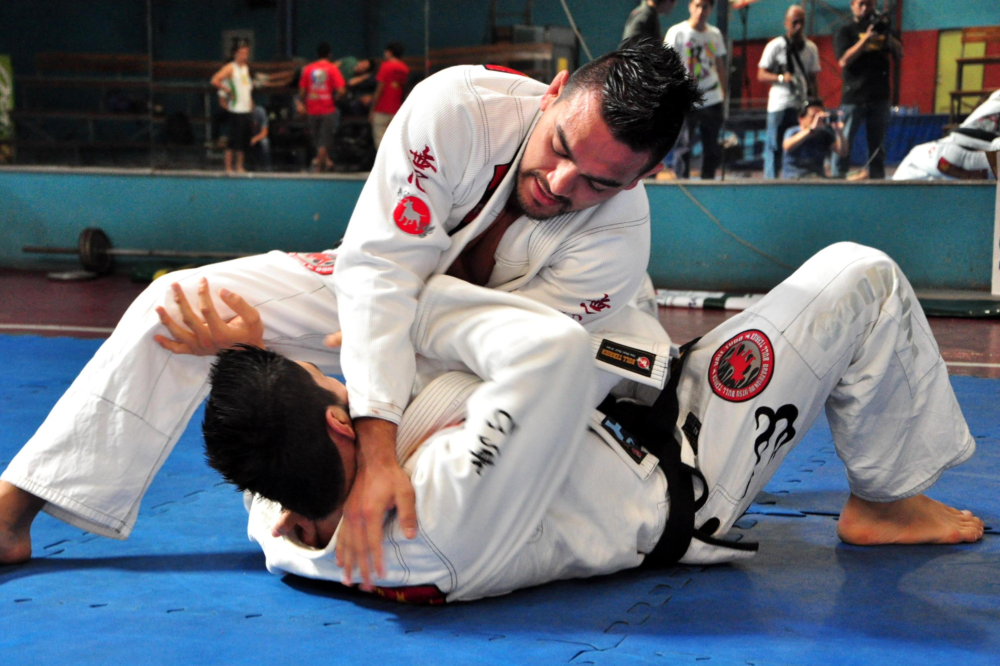

Джиу-джитсу — общее название, применяемое для японских боевых искусств, включающих в себя техники работы с оружием и без него; искусство рукопашного боя, основным принципом которого является «мягкая», «податливая» техника движений.

История джиу-джитсу.
Искусство джиу-джитсу берет своё начало в периоде Сэнгоку японской истории. В 1532 году Хисамори Такэноути, военный тактик и правитель провинции Мимасака, объединил различные военные искусства, которые использовались в ближнем бою в ситуациях, когда оружие оказывалось неэффективным. В начале XVII века в период Эдо джиу-джитсу получило стимул к развитию благодаря жестким законам против военных действий, наложенным сёгунатом Токугава, охваченным влиянием китайской философии неоконфуцианства, которая проникла в Японию в ходе Имджинской войны с Кореей и широко распространилось благодаря таким философам, как Фудзивара Сэйка. В это время оружие и доспехи превратились в домашние декорации, так что рукопашные бои процветали в качестве формы самообороны, и были созданы новые техники с учётом невооружённости противника. Китайские послы, направленные в Японию для установления мира и снижения уровня торговли Японии с Голландией, привезли в Японию китайское военное искусство ушу, и различные ударные техники были включены в джиу-джитсу. Однако в середине периода Эдо количество ударных техник серьёзно сократилось, поскольку они оказались менее эффективны и требовали много энергии, особенно сильные удары руками и ногами. Оставшиеся удары в основном были направлены в жизненно-важные точки тела, определённые китайской медициной, и жизненно-важные области выше плеч, обнаруженные в ранних техниках джиу-джитсу.
Основной принцип джиу-джитсу.
Основной принцип джиу-джитсу — «не идти на прямое противостояние, чтобы победить», не сопротивляться, а уступать натиску противника, лишь направляя его действия в нужную сторону до тех пор, пока тот не окажется в ловушке, и тогда обратить силу и действия врага против него самого.
Философия джиу-джитсу.
В течение жизни человек строит и укрепляет 4 основные стены своей «крепости»:
Подразумевается, что в случае крушения одной из стен жизнь человека может рухнуть, как карточный домик.
Поэтому формированием этих четырёх составляющих нужно начинать с самого раннего детства. Очень важно, чтобы ребёнок, к моменту его выхода во взрослую жизнь, имел надёжную опору и «крепость» с прочным фундаментом. Занятие дзю-дзюцу призвано формировать стойкий, мужественный характер, совершенствовать лучшие человеческие качества.
Техника джиу-джитсу.
Учитывая тот факт, что развитие техники джиу-джитсу проходило в среде японских самураев как один из способов поразить пешего, но вооружённого противника, не используя при этом оружие, следует отметить некоторые особенности этого вида единоборств. Ими являются как болевое воздействие на суставы тела, так и бросковая техника. Существенным моментом есть использование ударной техники, служащей в основном для того, чтобы, остановить соперника, который нередко находится в состоянии болевого шока, подготовить время для броска, вывести его из равновесия и произвести болевой либо удушающий приём.
Инвентарь, экипировка, используемое оружие.
Кимоно здесь называют «ги», «доги» или «кейкоги», где «кейко» – тренировка. Доги – это куртка, штаны и пояс. Униформа для занятий джиу-джитсу, с одной стороны, должна быть достаточно прочной, так как обязана выдерживать мощные рывки, захваты, броски, с другой – быть свободной, дабы не сковывать движений бойца во время проведения ударов. Правила предписывают использования мягкого шлема (надевается с 18 лет по желанию), шингертов (перчатки с открытыми пальцами), мягкой защиты на голень (по желанию), а вот надевать капу и применять защиту паха (ракушка) нужно обязательно. Обычно спортсмены выходят на бой босиком в кимоно белого или синего цвета.
Раздел джиу-джитсу «кобудо» посвящён работе с палкой и холодным оружием. Так как дзю-дзюцу предполагает, прежде всего, самооборону без каких-либо специальных средств, имеется много предметов, не являющихся оружием, но выступающих в его роли. В частности в качестве оружия могут широко применяться явара (палочка длиной 12-30,5 см), дзё (дубинка), бо (шест или посох), нож и веревка (или пояс). Среди наиболее характерных видов подручных средств – нунчаку (две палки длиной около 30 см, соединённые верёвкой), кама (серп), тонфа (палка длиной около 40 см с поперечной рукоятью), сай (металлический трезубец), кува (аналог тяпки), эку (деревянное весло), тимбэй (щит) и другие.